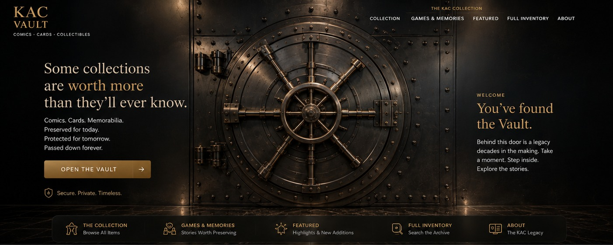
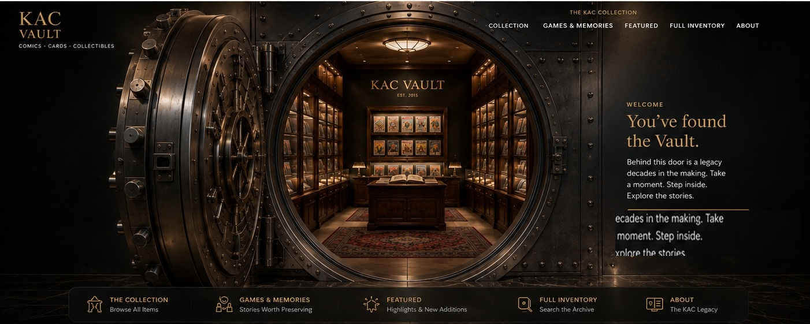

Comics
Raw keys, CGC graded books, variants, signatures and complete runs.


A growing archive of graded comics, key issues, trading cards and memorabilia — cataloged with permanent inventory IDs and photographed as the actual items in the collection.

Our first photographed graded collection. Each slab has its own permanent record with grade, certification details and multiple views.
Raw keys, CGC graded books, variants, signatures and complete runs.
Sports and non-sports cards cataloged with the same permanent SKU system.
Signed pieces, limited editions and other collectible objects.
A family archive of stadiums, rivalries, road trips and unforgettable games — preserved alongside the collectibles.
Explore Games & Memories 2015—2026 · 27 memories
2015—2026 · 27 memoriesKAC Vault is being built as both a family collection archive and a practical business platform. The first stage is preservation and cataloging. The same structure can later support QR labels, market tracking and e-commerce without rebuilding the collection from scratch.
Explore the collection →